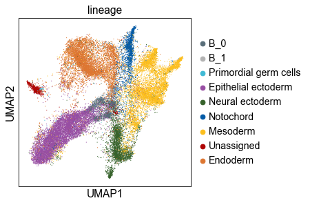
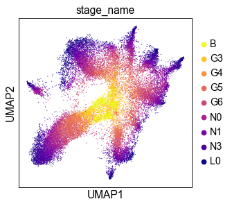

Tutorial for using stagewiseNN¶
TODO: Add some descriptions
[1]:
import os
import sys
from pathlib import Path
from typing import Sequence, Mapping, Optional, Union, Callable
import logging
import pandas as pd
import numpy as np
import scanpy as sc
if the package is not installed, you can also import it by appending the swnn’s parent directory to sys.path.
[2]:
ROOT = Path('../')
sys.path.append(str(ROOT))
import swnn
from swnn import describe_dataframe, set_adata_hvgs, change_names
0 Setting paths and load data¶
[3]:
DATADIR = ROOT / 'sample_data'
resdir = ROOT / '_temp'
swnn.check_dirs(resdir)
path_adata = DATADIR / 'subsampled_B-L0-0.2.h5ad'
already exists:
../_temp
Load sample data (an AnnData object)
[4]:
adata_raw = sc.read_h5ad(path_adata)
adata_raw
[4]:
AnnData object with n_obs × n_vars = 29775 × 24410
obs: 'stage_id', 'primer', 'n_genes', 'n_counts', 'stage_primer', 'stg_leiden', 'stage_stg_leiden', 'refined_group', 'leiden_new', 'parent_bcd', 'lineage', 'stage_name', 'stagewise_cluster'
uns: 'lineage_colors'
[5]:
# swnn.describe_dataframe(adata_raw.obs)
1 preprocessing¶
1.1 Normalize data and compute HVGs from scratch¶
Here we list two ways of normalization (where the first way is most commonly adopted):
[6]:
# way 1, most commonly adopted
adata_norm = swnn.normalize_default(adata_raw, target_sum=None, copy=True, )
[7]:
# way 2, less general, but works better for SplitSeq data (our sample data) in practice
adata_norm1 = swnn.normalize_log_then_total(adata_raw, target_sum=None, copy=True, )
1.2 Select HVGs from each group (stage) of data¶
[8]:
adata = adata_norm1
# adata = adata_norm
hvg_freq, hvg_dict = swnn.groupwise_hvgs_freq(adata, groupby='stage_name')
[9]:
hvgs = swnn.take_high_freq_elements(hvg_freq, 3)
print('Total of %d HVGs are used.' % len(hvgs))
Total of 4613 HVGs are used.
NOTE
If you have already computed the HVG frequencies, you can directly load them, and take ones with high-frequencies.
hvg_freq = pd.read_csv(path_hvg_freq, index_col=0, header=None).iloc[:, 0].to_dict()
hvgs = swnn.take_high_freq_elements(hvg_freq, min_freq=3)
Next, set HVGs to adata
[10]:
adata = set_adata_hvgs(adata, gene_list=hvgs)
1.3 Compute z-scores¶
Centering and scaling to unit variances, grouped by each “batch” (specified by the groupby parameter).
[11]:
batch_key = 'stage_primer'
swnn.wrapper_scale(adata, groupby=batch_key)
adata, adata.X[:2, :]
[11]:
(AnnData object with n_obs × n_vars = 29775 × 4613
obs: 'stage_id', 'primer', 'n_genes', 'n_counts', 'stage_primer', 'stg_leiden', 'stage_stg_leiden', 'refined_group', 'leiden_new', 'parent_bcd', 'lineage', 'stage_name', 'stagewise_cluster'
var: 'highly_variable'
uns: 'lineage_colors', 'log1p',
array([[-0.28615636, -0.35525173, -0.12650372, ..., -0.25878315,
-0.19844045, -0.20785098],
[-0.19452356, -0.25703438, -0.0802073 , ..., -0.24499079,
-0.11594469, -0.13195746]]))
2 The main process¶
2.0 Setting inputs and parameters¶
[12]:
# ====== Inputs ======
data_matrix = adata.X
stage_order = ("B", "G3", "G4", "G5", "G6", "N0", "N1", "N3", "L0")
stage_labels = adata.obs['stage_name']
# only used for building tree, each group will be taken as a tree node
group_labels = adata.obs['stagewise_cluster']
# ====== Parameters ======
ks = [10] * 7 + [3] * 2 # specified for different stages
n_pcs = 30 # you can also set it a list like ``ks``
leaf_size = 1 # 1 for exact KNN
Initialize a Builder object:
[13]:
builder = swnn.Builder(stage_order=stage_order)
2.1 Building (stage-wise) single-cell graph¶
[14]:
distmat, connect = builder.build_graph(
X=data_matrix, stage_lbs=stage_labels,
ks=ks, n_pcs=n_pcs,
leaf_size=leaf_size,
)
perform KNN searching: B in B
perform KNN searching: G3 in B
perform KNN searching: G4 in G3
perform KNN searching: G5 in G4
perform KNN searching: G6 in G5
perform KNN searching: N0 in G6
perform KNN searching: N1 in N0
perform KNN searching: N3 in N1
perform KNN searching: L0 in N3
2.1.1 Further visualization¶
Compute UMAP based on your precomputed single-cell-graph
[15]:
swnn.set_precomputed_neighbors(adata, distmat, connect)
sc.tl.umap(adata, min_dist=0.1)
WARNING: You’re trying to run this on 4613 dimensions of `.X`, if you really want this, set `use_rep='X'`.
Falling back to preprocessing with `sc.pp.pca` and default params.
[16]:
sc.settings.figdir = resdir
sc.set_figure_params(fontsize=14)
sc.pl.umap(adata, color='lineage', ncols=1, save='_lineage.pdf')
sc.pl.umap(adata, color='stage_name', palette='plasma_r', save='_stage.pdf')
WARNING: saving figure to file ../_temp/umap_lineage.pdf

WARNING: saving figure to file ../_temp/umap_stage.pdf

2.2 Build developmental tree from single-cell graph¶
[17]:
edgedf, refined_group_lbs = builder.build_tree(group_labels, stage_labels,)
connecting stage B and G3
---> aggregating edges...
unique labels of rows: ['B_1' 'B_0' 'B_2']
unique labels of columns: ['G3_1' 'G3_0' 'G3_3' 'G3_4' 'G3_2' 'G3_5']
grouping elements (edges)
shape of the one-hot-labels: (1596, 3) (1826, 6)
parent nodes that had no descendent: ['B_2']
Taking descendant-points from other nodes (groups)
pasting stage labels
---> aggregating edges...
unique labels of rows: ['B_1' 'B_0' 'B_2']
unique labels of columns: ['G3_1' 'G3_0' 'G3_3' 'G3_4' 'G3_2' 'G3_5' 'G3_6']
grouping elements (edges)
shape of the one-hot-labels: (1596, 3) (1826, 7)
connecting stage G3 and G4
---> aggregating edges...
unique labels of rows: ['G3_0', 'G3_1', 'G3_2', 'G3_3', 'G3_4', 'G3_5', 'G3_6']
unique labels of columns: ['G4_0' 'G4_4' 'G4_2' 'G4_3' 'G4_1']
grouping elements (edges)
shape of the one-hot-labels: (1826, 7) (1477, 5)
parent nodes that had no descendent: ['G3_3', 'G3_6']
Taking descendant-points from other nodes (groups)
pasting stage labels
---> aggregating edges...
unique labels of rows: ['G3_0', 'G3_1', 'G3_2', 'G3_3', 'G3_4', 'G3_5', 'G3_6']
unique labels of columns: ['G4_0' 'G4_4' 'G4_2' 'G4_3' 'G4_1' 'G4_5']
grouping elements (edges)
shape of the one-hot-labels: (1826, 7) (1477, 6)
connecting stage G4 and G5
---> aggregating edges...
unique labels of rows: ['G4_0', 'G4_1', 'G4_2', 'G4_3', 'G4_4', 'G4_5']
unique labels of columns: ['G5_2' 'G5_0' 'G5_3' 'G5_1' 'G5_5' 'G5_8' 'G5_6' 'G5_4' 'G5_7']
grouping elements (edges)
shape of the one-hot-labels: (1477, 6) (4098, 9)
parent nodes that had no descendent: ['G4_5']
Taking descendant-points from other nodes (groups)
pasting stage labels
---> aggregating edges...
unique labels of rows: ['G4_0', 'G4_1', 'G4_2', 'G4_3', 'G4_4', 'G4_5']
unique labels of columns: ['G5_2' 'G5_0' 'G5_3' 'G5_1' 'G5_5' 'G5_8' 'G5_6' 'G5_4' 'G5_7' 'G5_9']
grouping elements (edges)
shape of the one-hot-labels: (1477, 6) (4098, 10)
connecting stage G5 and G6
---> aggregating edges...
unique labels of rows: ['G5_0', 'G5_1', 'G5_2', 'G5_3', 'G5_4', 'G5_5', 'G5_6', 'G5_7', 'G5_8', 'G5_9']
unique labels of columns: ['G6_1' 'G6_0' 'G6_3' 'G6_4' 'G6_8' 'G6_7' 'G6_5' 'G6_6' 'G6_2']
grouping elements (edges)
shape of the one-hot-labels: (4098, 10) (4775, 9)
parent nodes that had no descendent: ['G5_8', 'G5_9']
Taking descendant-points from other nodes (groups)
pasting stage labels
---> aggregating edges...
unique labels of rows: ['G5_0', 'G5_1', 'G5_2', 'G5_3', 'G5_4', 'G5_5', 'G5_6', 'G5_7', 'G5_8', 'G5_9']
unique labels of columns: ['G6_1' 'G6_0' 'G6_3' 'G6_4' 'G6_8' 'G6_7' 'G6_5' 'G6_6' 'G6_9' 'G6_2'
'G6_10']
grouping elements (edges)
shape of the one-hot-labels: (4098, 10) (4775, 11)
connecting stage G6 and N0
---> aggregating edges...
unique labels of rows: ['G6_0', 'G6_1', 'G6_2', 'G6_3', 'G6_4', 'G6_5', 'G6_6', 'G6_7', 'G6_8', 'G6_9', 'G6_10']
unique labels of columns: ['N0_6' 'N0_2' 'N0_8' 'N0_5' 'N0_4' 'N0_3' 'N0_1' 'N0_0' 'N0_9' 'N0_7']
grouping elements (edges)
shape of the one-hot-labels: (4775, 11) (4992, 10)
parent nodes that had no descendent: ['G6_9', 'G6_10']
Taking descendant-points from other nodes (groups)
pasting stage labels
---> aggregating edges...
unique labels of rows: ['G6_0', 'G6_1', 'G6_2', 'G6_3', 'G6_4', 'G6_5', 'G6_6', 'G6_7', 'G6_8', 'G6_9', 'G6_10']
unique labels of columns: ['N0_6' 'N0_2' 'N0_8' 'N0_5' 'N0_4' 'N0_3' 'N0_1' 'N0_0' 'N0_9' 'N0_7'
'N0_10' 'N0_11']
grouping elements (edges)
shape of the one-hot-labels: (4775, 11) (4992, 12)
connecting stage N0 and N1
---> aggregating edges...
unique labels of rows: ['N0_0', 'N0_1', 'N0_2', 'N0_3', 'N0_4', 'N0_5', 'N0_6', 'N0_7', 'N0_8', 'N0_9', 'N0_10', 'N0_11']
unique labels of columns: ['N1_4' 'N1_3' 'N1_2' 'N1_0' 'N1_7' 'N1_6' 'N1_5' 'N1_8' 'N1_1' 'N1_9']
grouping elements (edges)
shape of the one-hot-labels: (4992, 12) (4399, 10)
parent nodes that had no descendent: ['N0_10', 'N0_11']
Taking descendant-points from other nodes (groups)
pasting stage labels
---> aggregating edges...
unique labels of rows: ['N0_0', 'N0_1', 'N0_2', 'N0_3', 'N0_4', 'N0_5', 'N0_6', 'N0_7', 'N0_8', 'N0_9', 'N0_10', 'N0_11']
unique labels of columns: ['N1_4' 'N1_3' 'N1_2' 'N1_0' 'N1_7' 'N1_6' 'N1_5' 'N1_8' 'N1_1' 'N1_9'
'N1_10']
grouping elements (edges)
shape of the one-hot-labels: (4992, 12) (4399, 11)
connecting stage N1 and N3
---> aggregating edges...
unique labels of rows: ['N1_0', 'N1_1', 'N1_2', 'N1_3', 'N1_4', 'N1_5', 'N1_6', 'N1_7', 'N1_8', 'N1_9', 'N1_10']
unique labels of columns: ['N3_0' 'N3_6' 'N3_2' 'N3_8' 'N3_4' 'N3_10' 'N3_9' 'N3_1' 'N3_13' 'N3_3'
'N3_7' 'N3_5' 'N3_11' 'N3_12']
grouping elements (edges)
shape of the one-hot-labels: (4399, 11) (4448, 14)
parent nodes that had no descendent: ['N1_3', 'N1_9', 'N1_10']
Taking descendant-points from other nodes (groups)
pasting stage labels
---> aggregating edges...
unique labels of rows: ['N1_0', 'N1_1', 'N1_2', 'N1_3', 'N1_4', 'N1_5', 'N1_6', 'N1_7', 'N1_8', 'N1_9', 'N1_10']
unique labels of columns: ['N3_0' 'N3_6' 'N3_2' 'N3_8' 'N3_4' 'N3_10' 'N3_9' 'N3_1' 'N3_13' 'N3_3'
'N3_7' 'N3_5' 'N3_11' 'N3_12' 'N3_15' 'N3_14' 'N3_16']
grouping elements (edges)
shape of the one-hot-labels: (4399, 11) (4448, 17)
connecting stage N3 and L0
---> aggregating edges...
unique labels of rows: ['N3_0', 'N3_1', 'N3_2', 'N3_3', 'N3_4', 'N3_5', 'N3_6', 'N3_7', 'N3_8', 'N3_9', 'N3_10', 'N3_11', 'N3_12', 'N3_13', 'N3_14', 'N3_15', 'N3_16']
unique labels of columns: ['L0_4' 'L0_1' 'L0_0' 'L0_14' 'L0_6' 'L0_7' 'L0_12' 'L0_10' 'L0_11' 'L0_5'
'L0_8' 'L0_2' 'L0_9' 'L0_16' 'L0_3' 'L0_15' 'L0_13']
grouping elements (edges)
shape of the one-hot-labels: (4448, 17) (2164, 17)
parent nodes that had no descendent: ['N3_4', 'N3_5', 'N3_11', 'N3_14', 'N3_15', 'N3_16']
Taking descendant-points from other nodes (groups)
pasting stage labels
---> aggregating edges...
unique labels of rows: ['N3_0', 'N3_1', 'N3_2', 'N3_3', 'N3_4', 'N3_5', 'N3_6', 'N3_7', 'N3_8', 'N3_9', 'N3_10', 'N3_11', 'N3_12', 'N3_13', 'N3_14', 'N3_15', 'N3_16']
unique labels of columns: ['L0_4' 'L0_1' 'L0_0' 'L0_14' 'L0_6' 'L0_7' 'L0_12' 'L0_10' 'L0_11' 'L0_5'
'L0_8' 'L0_2' 'L0_9' 'L0_16' 'L0_19' 'L0_3' 'L0_15' 'L0_13' 'L0_21'
'L0_18' 'L0_20' 'L0_17' 'L0_22']
grouping elements (edges)
shape of the one-hot-labels: (4448, 17) (2164, 23)
[18]:
edgedf.head()
[18]:
| node | parent | prop | |
|---|---|---|---|
| 0 | G3_1 | B_1 | 0.676985 |
| 1 | G3_0 | B_0 | 0.985633 |
| 2 | G3_3 | B_0 | 0.581227 |
| 3 | G3_4 | B_0 | 0.946490 |
| 4 | G3_2 | B_0 | 0.584790 |
[ ]: